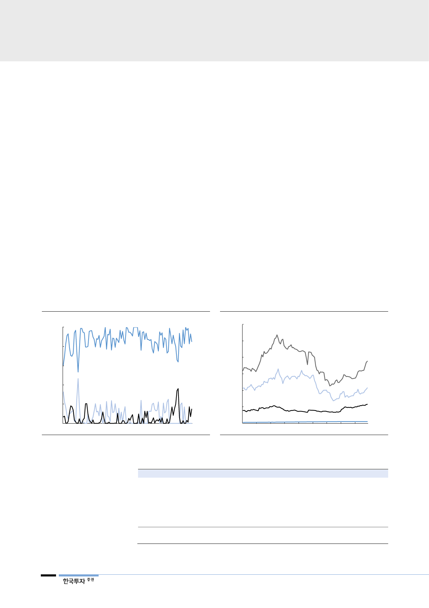

SMP는 첨두발전의
변동비로 결정
전력생산량에 대한 보상인 전력량 요금은 일반적인 양방향 입찰(Two Way
Bidding Pool)이 아니라 전력수요의 피크(첨두부하)에 투입되는 한계공급비용에
근거해 결정(Cost Based Pool, 변동비 반영시장)된다. 이는 연료비가 저렴한 순
서대로 발전기를 가동시켜 마지막으로 투입된, 즉 원가가 가장 높은 발전기의 변
동비(System Marginal Price, 계통한계가격)를 기준으로 삼는 방식이다. 시간대
별 투입되는 가장 비싼 발전설비의 단가가 SMP로 결정되며, 모든 전력거래량에
대해 일괄적으로 적용된다. 다만 단가가 저렴한 기저발전 중심의 한전 발전자회
사로 이익이 쏠리게 될 가능성이 높아, 이들에게는 SMP와 실제 변동비 간의 차
익에 대해 정산조정계수를 적용해 정산하고 있다.
한전이 내는 전력가격은
LNG 단가, 즉 유가와 밀접
따라서 CBP 시장에서 전력가격은 주로 최후에 투입되는 LNG 단가와 밀접한 관
계를 보인다. 발전단가가 낮은 원자력과 석탄은 기저발전으로 예방정비나 고장이
아니라면 상시 가동된다. 보통 여기서 충족되지 못한 전력수요에 대해 LNG나 유
류 발전이 마지막으로 투입되는 구조다. 실제 2017년 전력거래에서 LNG 발전의
가격결정비율은 82%로 높았다. 한편 LNG 가격은 3~5개월의 시차를 두고 유가
에 연동된다. 결국 지난 1년처럼 단가가 낮은 기저발전의 가동률이 떨어지거나,
LNG 단가와 밀접한 유가가 오르면 SMP는 상승하게 된다. 이는 한전의 비용부
담으로 이어진다.
[그림 44] 올해 LNG의 SMP 결정 비율은 90% 상회
(%)
SMP 결정 비율
100
LNG
80
60
40
20
석탄
0
유류
10 11 12 13 14 15 16 17 18
자료: 한국전력거래소, 한국투자증권
[그림 45] 유가 상승으로 LNG와 유류 발전단가는 상승
(원/kWh)
300
연료비 단가
250
200
유류
150
100
LNG
유연탄
50
0
10 11 12 13 14 15 16 17 18
자료: 한국전력거래소, 한국투자증권
원자력
<표 9> 전력거래가격 = 계통한계가격(SMP) + 용량가격(CP)
구분
한계가격
(변동비 보상)
용량가격
(고정비 보상)
자료: 한국전력, 한국투자증권
내용
- 전력발전에 소요되는 연료비 등을 보상하기 위해 지급
- 각 연료별 평균 단가를 적용해 발전기별 1kWh당 생산비용 산정
- 매시간대별 전력수요를 충족시키기 위해 연료비가 싼 발전기 순서대로 투입
마지막으로 투입된 발전기의 변동비로 계통한계가격이 결정됨
- 발전자회사는 정산조정계수를 적용해 지급: 변동비+(SMP-변동비)X조정계수
- 2017년 평균 계통한계가격은 81.77원/kWh으로 전년대비 6.1% 상승
- 발전기 건설비용을 보상해줌으로써 신규투자를 유인하기 위해 지급
- 발전사가 전력거래소에 신고한 공급가능용량을 기준으로 지급
22